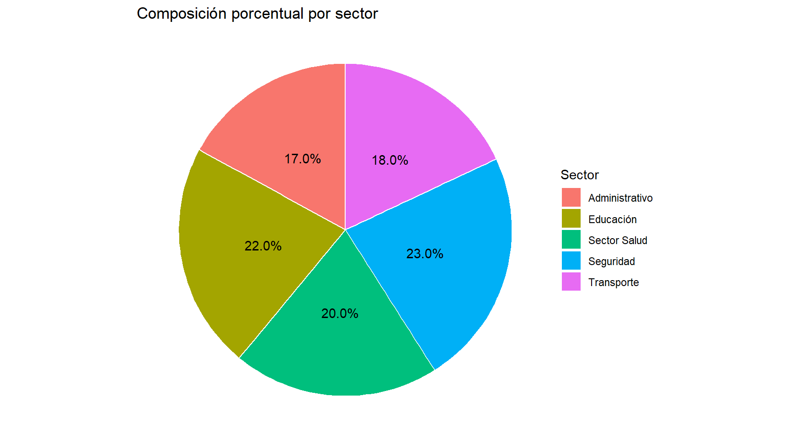
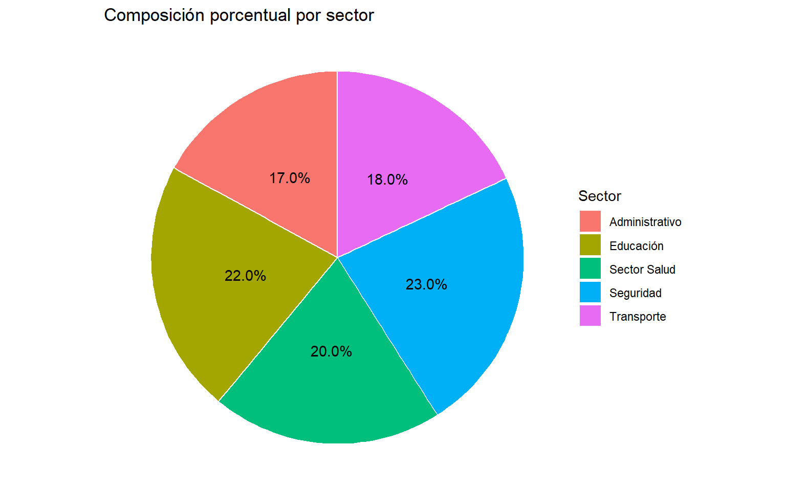
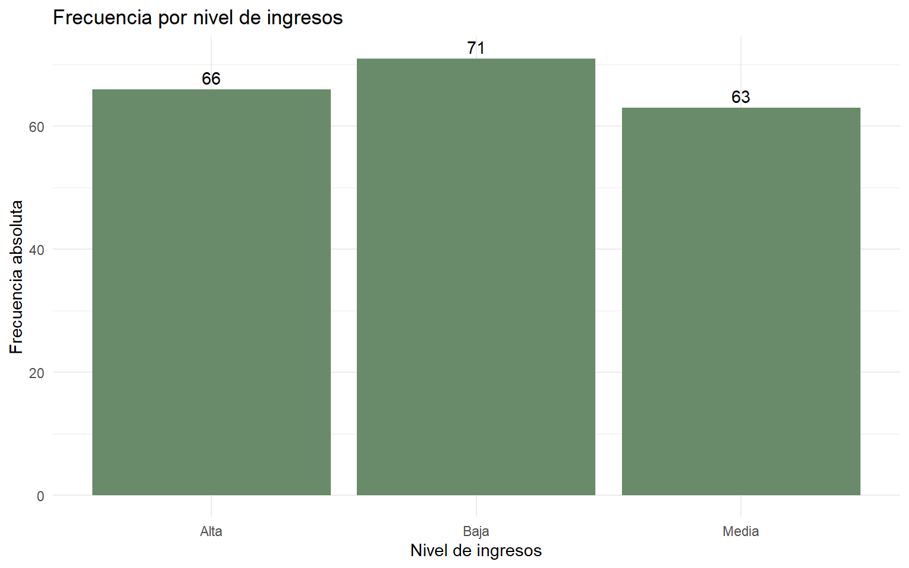
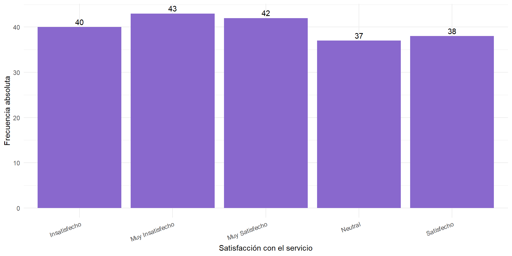
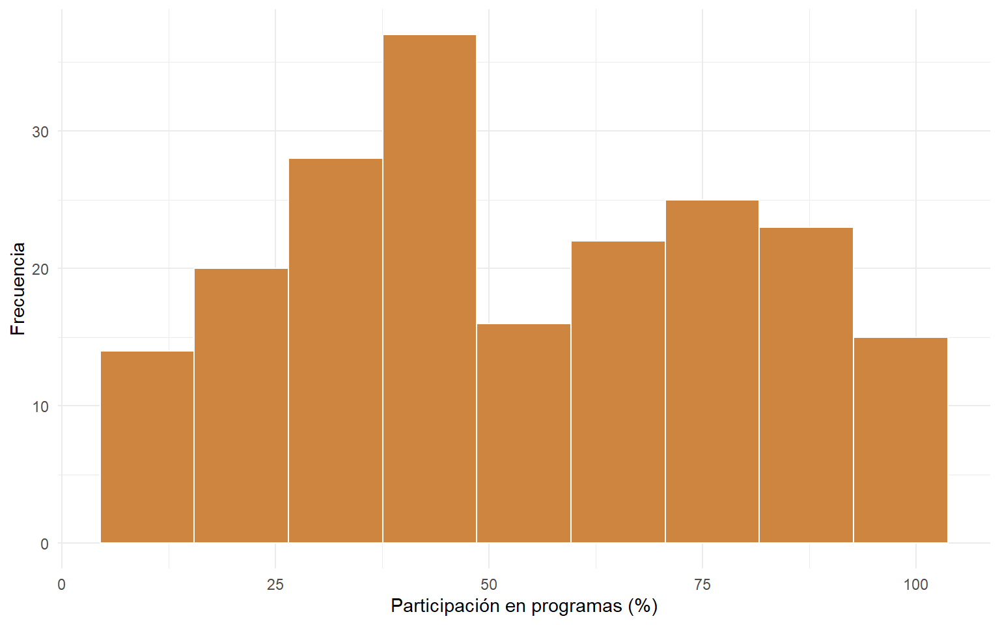

La estadística descriptiva permite organizar, resumir, analizar y presentar información mediante tablas, medidas numéricas y representaciones gráficas. Este documento desarrolla un análisis estadístico de una base de datos de 200 registros y 10 variables, relacionadas con personas vinculadas a diferentes sectores de la administración pública.
El análisis utiliza la base de datos disponible en la carpeta del proyecto y sigue la clasificación conceptual y las categorías establecidas en el Diccionario de Variables suministrado. Se estudian variables cualitativas nominales y ordinales, así como variables cuantitativas discretas y continuas.
Los resultados se calculan directamente desde la base de datos. Por tanto, las tablas y los gráficos se actualizarán cuando se modifique el archivo CSV y se vuelva a renderizar el documento.
Objetivo general
Realizar un análisis estadístico descriptivo de las personas registradas en los diferentes sectores de la administración pública, mediante distribuciones de frecuencias, medidas de tendencia central, medidas de dispersión y gráficos.
Objetivos específicos
Identificar y clasificar las variables de acuerdo con el diccionario suministrado.
Construir tablas de frecuencias absolutas, relativas, porcentuales y acumuladas cuando corresponda.
Representar gráficamente las variables cualitativas y cuantitativas.
Calcular medidas de tendencia central y dispersión para las variables numéricas.
Agrupar las variables cuantitativas continuas mediante la regla de Sturges.
Interpretar los resultados sin atribuir a la base información que no contiene.
2 Fuente de información y descripción de los datos
La fuente utilizada es el archivo de datos del proyecto. La base se describe con 200 observaciones y 10 variables. El diccionario define el significado, tipo y categorías de cada variable.
** 2.1. Carga de paquetes e importación de datos
Guarde el archivo sector(1).csv en la misma carpeta que este documento .qmd. La importación se realiza con read_csv() del paquete readr.
Organización de las categorías
Se establecen los niveles de las variables cualitativas ordinales y nominales de acuerdo con el diccionario de variables.
resumen_base <-tibble(Indicador =c("Número de observaciones","Número de variables","Valores faltantes","Variables cualitativas","Variables cuantitativas" ),Resultado =c(nrow(datos),ncol(datos),sum(is.na(datos)),length(variables_nominales) +length(variables_ordinales),length(variables_numericas) ))kable( resumen_base,caption ="Resumen general de la base de datos") |>kable_styling(full_width =FALSE)
Resumen general de la base de datos
Indicador
Resultado
Número de observaciones
200
Número de variables
10
Valores faltantes
0
Variables cualitativas
4
Variables cuantitativas
6
Ver código
head(datos, 10) |>kable(caption ="Primeros diez registros de la base") |>kable_styling(full_width =TRUE,bootstrap_options =c("striped", "hover") )
La siguiente clasificación conserva los nombres, categorías y tipos descritos en el diccionario entregado.
Variable
Tipo según el diccionario
Descripción
Sector_Laboral
Cualitativa nominal
Sector de la administración pública: Salud, Educación, Transporte, Seguridad y Administrativo.
Nivel_Ingresos
Cualitativa ordinal
Nivel de ingresos: Baja, Media y Alta.
Satisfaccion_Servicio
Cualitativa ordinal
Satisfacción: Muy Insatisfecho, Insatisfecho, Neutral, Satisfecho y Muy Satisfecho.
Frecuencia_Participacion
Cualitativa ordinal
Frecuencia: Nunca, Rara vez, A veces, Frecuentemente y Siempre.
Anos_Experiencia
Cuantitativa discreta
Años de experiencia laboral, valores enteros de 0 a 20.
Numero_Hijos
Cuantitativa discreta
Número de hijos, valores enteros de 1 a 5 según el diccionario.
Salario
Cuantitativa continua
Salario mensual en miles de pesos; 1000 equivale a $1.000.000 COP.
Satisfaccion_Laboral
Cuantitativa continua
Satisfacción laboral en escala de 0.5 a 2.5.
Edad
Cuantitativa continua
Edad en años, rango descrito de 20 a 60 años.
Participacion_Programas
Cuantitativa continua
Proporción de participación en programas, de 0.1 a 1.0 (10 % a 100 %).
Nota de interpretación: se conserva la clasificación indicada en el diccionario. Aunque la edad se registra en años enteros en esta base, se mantiene como variable continua porque así está definida en el documento de referencia. El salario se analiza en la unidad original de miles de pesos.
4 Distribución de frecuencias: conceptos y fórmulas
Una distribución de frecuencias organiza las observaciones en categorías o intervalos e indica cuántas pertenecen a cada uno.
Sea el conjunto de observaciones:
X = \{x_1, x_2, \ldots, x_n\}
donde (n) representa el número total de observaciones.
Frecuencia absoluta
La frecuencia absoluta (f_i) representa el número de observaciones que pertenecen a la categoría o clase (i).
f_i = \text{número de observaciones de la categoría } i
La suma de las frecuencias absolutas es igual al total de datos:
\sum_{i=1}^{k} f_i = n
Frecuencia relativa
La frecuencia relativa (h_i) expresa la proporción de observaciones de una categoría:
h_i = \frac{f_i}{n}
La suma de las frecuencias relativas es:
\sum_{i=1}^{k} h_i = 1
Porcentaje
El porcentaje se obtiene multiplicando la frecuencia relativa por cien:
p_i = h_i \times 100
= \frac{f_i}{n}\times 100
Frecuencia absoluta acumulada
La frecuencia absoluta acumulada suma las frecuencias desde la primera categoría hasta la categoría (i):
F_i = \sum_{j=1}^{i} f_j
Frecuencia relativa acumulada
La frecuencia relativa acumulada se calcula mediante:
H_i = \sum_{j=1}^{i} h_j
= \frac{F_i}{n}
Las frecuencias acumuladas se interpretan principalmente en variables ordinales o cuantitativas, porque sus categorías tienen un orden.
Agrupación de datos: regla de Sturges
Para construir intervalos en variables cuantitativas se utiliza la regla de Sturges como criterio orientador:
k = 1 + 3.322\log_{10}(n)
El rango se calcula como:
R = X_{\max} - X_{\min}
La amplitud aproximada de clase es:
A = \frac{R}{k}
La marca de clase corresponde al punto medio de cada intervalo:
m_i = \frac{L_i+L_s}{2}
donde (L_i) es el límite inferior y (L_s) el límite superior del intervalo.
5 Funciones para elaborar tablas de frecuencias
Se crean funciones reutilizables para calcular frecuencias simples y agrupadas. De esta manera, las tablas se generan a partir de los datos reales y no de valores escritos manualmente.
Función para variables cualitativas y discretas
Ver código
tabla_frecuencias <-function(data, variable, acumuladas =TRUE) { x <- data[[variable]]if (is.factor(x)) { categorias <-levels(x) conteos <-table(factor(x, levels = categorias), useNA ="no") tabla <-tibble(Categoria = categorias,fi =as.integer(conteos) ) } else { tabla <-tibble(Categoria = x) |>filter(!is.na(Categoria)) |>count(Categoria, name ="fi") |>arrange(Categoria) } tabla <- tabla |>mutate(hi = fi /sum(fi),Porcentaje = hi *100 )if (acumuladas) { tabla <- tabla |>mutate(Fi =cumsum(fi),Hi =cumsum(hi) ) } tabla}
Función para variables cuantitativas continuas
Ver código
tabla_agrupada <-function(x) { x <- x[!is.na(x)] n <-length(x)if (n ==0) {stop("No hay datos válidos para agrupar.") } k <-max(1, ceiling(1+3.322*log10(n))) minimo <-min(x) maximo <-max(x)if (minimo == maximo) {return(tibble(Intervalo =as.character(minimo),Marca_clase = minimo,fi = n,hi =1,Porcentaje =100,Fi = n,Hi =1 )) } limites <-seq(minimo, maximo, length.out = k +1) clases <-cut( x,breaks = limites,include.lowest =TRUE,right =TRUE,dig.lab =8 ) frecuencias <-as.data.frame(table(clases))names(frecuencias) <-c("Intervalo", "fi") frecuencias |>mutate(fi =as.integer(fi),hi = fi /sum(fi),Porcentaje = hi *100,Fi =cumsum(fi),Hi =cumsum(hi),Marca_clase = (head(limites, -1) +tail(limites, -1)) /2 ) |>select(Intervalo, Marca_clase, fi, hi, Porcentaje, Fi, Hi)}
6 Análisis de variables cualitativas
Las variables cualitativas permiten describir las categorías de pertenencia, niveles de ingreso, satisfacción y frecuencia de participación. Para las variables ordinales se respeta el orden establecido en el diccionario.
Variable nominal: sector laboral
La variable Sector_Laboral identifica el sector de la administración pública al que pertenece cada registro. Es nominal porque sus categorías no tienen un orden jerárquico.
Ver código
tabla_sector <-tabla_frecuencias( datos,"Sector_Laboral",acumuladas =FALSE)kable( tabla_sector,digits =3,caption ="Distribución de frecuencias por sector laboral") |>kable_styling(full_width =FALSE,bootstrap_options =c("striped", "hover") )
Distribución de frecuencias por sector laboral
Categoria
fi
hi
Porcentaje
Sector Salud
40
0.20
20
Educación
44
0.22
22
Transporte
36
0.18
18
Seguridad
46
0.23
23
Administrativo
34
0.17
17
Ver código
ggplot(tabla_sector, aes(x ="", y = fi, fill = Categoria)) +geom_col(width =1, color ="white") +coord_polar(theta ="y") +geom_text(aes(label = scales::percent(fi /sum(fi), accuracy =0.1)),position =position_stack(vjust =0.5) ) +labs(title ="Composición porcentual por sector",fill ="Sector" ) +theme_void()

Frecuencia de personas por sector laboral.
Ver código
ggplot(tabla_sector, aes(x ="", y = fi, fill = Categoria)) +geom_col(width =1, color ="white") +coord_polar(theta ="y") +geom_text(aes(label =percent(fi /sum(fi), accuracy =0.1)),position =position_stack(vjust =0.5) ) +labs(title ="Composición porcentual por sector",fill ="Sector" ) +theme_void()

Participación porcentual de los sectores laborales.
Interpretación. La tabla y los gráficos permiten comparar la cantidad y el porcentaje de registros de Salud, Educación, Transporte, Seguridad y Administrativo. El sector con mayor frecuencia representa la mayor participación dentro de esta base, sin que ello implique necesariamente que sea el sector más grande en toda la administración pública.
Variables ordinales
Nivel de ingresos
La variable Nivel_Ingresos es cualitativa ordinal. Sus categorías se presentan en el orden establecido en el diccionario: Baja, Media y Alta.
Ver código
tabla_ingresos <-tabla_frecuencias( datos,"Nivel_Ingresos",acumuladas =TRUE)kable( tabla_ingresos,digits =3,caption ="Distribución de frecuencias del nivel de ingresos") |>kable_styling(full_width =FALSE)
Distribución de frecuencias del nivel de ingresos
Categoria
fi
hi
Porcentaje
Fi
Hi
Baja
71
0.355
35.5
71
0.355
Media
63
0.315
31.5
134
0.670
Alta
66
0.330
33.0
200
1.000
Ver código
ggplot(tabla_ingresos, aes(x = Categoria, y = fi)) +geom_col(fill ="darkseagreen4") +geom_text(aes(label = fi), vjust =-0.4) +labs(title ="Frecuencia por nivel de ingresos",x ="Nivel de ingresos",y ="Frecuencia absoluta" ) +theme_minimal()

Frecuencia por nivel de ingresos.
Interpretación. La distribución muestra cómo se clasifican los registros entre los niveles Bajo, Medio y Alto. La frecuencia acumulada permite observar el total de registros hasta cada nivel, respetando el orden del diccionario.
Satisfacción con el servicio
Ver código
tabla_servicio <-tabla_frecuencias( datos,"Satisfaccion_Servicio")kable( tabla_servicio,digits =3,caption ="Distribución según satisfacción con el servicio") |>kable_styling(full_width =FALSE)
Distribución según satisfacción con el servicio
Categoria
fi
hi
Porcentaje
Fi
Hi
Muy Insatisfecho
43
0.215
21.5
43
0.215
Insatisfecho
40
0.200
20.0
83
0.415
Neutral
37
0.185
18.5
120
0.600
Satisfecho
38
0.190
19.0
158
0.790
Muy Satisfecho
42
0.210
21.0
200
1.000
Ver código
ggplot(tabla_servicio, aes(x = Categoria, y = fi)) +geom_col(fill ="mediumpurple3") +geom_text(aes(label = fi), vjust =-0.4) +labs(x ="Satisfacción con el servicio",y ="Frecuencia absoluta" ) +theme_minimal() +theme(axis.text.x =element_text(angle =20, hjust =1))

Frecuencia de satisfacción con el servicio.
Interpretación. Las categorías permiten identificar la percepción de las personas encuestadas sobre los servicios recibidos o brindados en su ámbito laboral. Las respuestas se presentan desde Muy Insatisfecho hasta Muy Satisfecho.
Frecuencia de participación
Ver código
tabla_participacion <-tabla_frecuencias( datos,"Frecuencia_Participacion")kable( tabla_participacion,digits =3,caption ="Distribución según frecuencia de participación") |>kable_styling(full_width =FALSE)
Frecuencia de participación en actividades o programas.
Interpretación. La variable permite identificar si la participación ocurre Nunca, Rara vez, A veces, Frecuentemente o Siempre. La categoría con mayor frecuencia representa la respuesta más común en la muestra.
7 Análisis de variables cuantitativas
Las variables cuantitativas permiten realizar operaciones aritméticas y calcular medidas de tendencia central y dispersión.
Medidas de tendencia central
La media aritmética se calcula mediante:
\bar{x} = \frac{\sum_{i=1}^{n}x_i}{n}
La mediana corresponde al valor central de los datos ordenados. La moda es el valor o categoría que presenta la mayor frecuencia.
Medidas de dispersión
La varianza muestral se expresa como:
s^2 = \frac{\sum_{i=1}^{n}(x_i-\bar{x})^2}{n-1}
La desviación estándar es:
s = \sqrt{s^2}
El rango corresponde a:
R = X_{\max} - X_{\min}
El coeficiente de variación se calcula como:
CV = \frac{s}{\bar{x}}\times 100
Se utiliza para expresar la desviación estándar como porcentaje de la media, siempre que la media sea distinta de cero.
Función para calcular la moda y las medidas descriptivas
Ver código
moda <-function(x) { x <- x[!is.na(x)] frecuencias <-table(x)as.numeric(names(frecuencias)[frecuencias ==max(frecuencias)][1])}tabla_descriptiva <-bind_rows(lapply(variables_numericas, function(v) { x <- datos[[v]] x <- x[!is.na(x)]tibble(Variable = v,n =length(x),Minimo =min(x),Maximo =max(x),Media =mean(x),Mediana =median(x),Moda =moda(x),Desviacion_estandar =sd(x),Varianza =var(x),Rango =diff(range(x)),Coeficiente_variacion =ifelse(mean(x) !=0,sd(x) /mean(x) *100,NA_real_ ) )}))kable( tabla_descriptiva,digits =3,caption ="Medidas descriptivas de las variables cuantitativas") |>kable_styling(full_width =TRUE,bootstrap_options =c("striped", "hover") )
Medidas descriptivas de las variables cuantitativas
Variable
n
Minimo
Maximo
Media
Mediana
Moda
Desviacion_estandar
Varianza
Rango
Coeficiente_variacion
Anos_Experiencia
200
0.00
20.000
9.835
10.000
1.000
6.151
37.837
20.000
62.544
Numero_Hijos
200
1.00
5.000
3.030
3.000
4.000
1.400
1.959
4.000
46.192
Salario
200
1085.00
4963.000
3235.870
3412.000
4581.000
1168.595
1365614.717
3878.000
36.114
Satisfaccion_Laboral
200
0.54
2.500
1.598
1.610
1.900
0.544
0.295
1.960
34.006
Edad
200
20.00
60.000
39.925
39.500
23.000
11.921
142.110
40.000
29.858
Participacion_Programas
200
0.10
0.982
0.540
0.496
0.125
0.257
0.066
0.882
47.503
Variables cuantitativas discretas
Las variables discretas toman valores contables. Según el diccionario, en esta base corresponden a años de experiencia y número de hijos.
Años de experiencia
Ver código
tabla_experiencia <-tabla_frecuencias( datos,"Anos_Experiencia",acumuladas =TRUE)kable( tabla_experiencia,digits =3,caption ="Distribución de frecuencias de los años de experiencia") |>kable_styling(full_width =FALSE)
Distribución de frecuencias de los años de experiencia
tabla_hijos <-tabla_frecuencias( datos,"Numero_Hijos",acumuladas =TRUE)kable( tabla_hijos,digits =3,caption ="Distribución de frecuencias del número de hijos") |>kable_styling(full_width =FALSE)
Histograma de la edad de las personas registradas.
Participación en programas
La variable está registrada como una proporción entre 0.1 y 1.0. Para presentar el resultado como porcentaje se multiplica por cien:
P(\%) = P \times 100
Ver código
tabla_programas <-tabla_agrupada( datos$Participacion_Programas)kable( tabla_programas,digits =3,caption ="Distribución agrupada de participación en programas") |>kable_styling(full_width =FALSE)
Distribución agrupada de participación en programas
Intervalo
Marca_clase
fi
hi
Porcentaje
Fi
Hi
[0.1,0.198]
0.149
22
0.110
11.0
22
0.110
(0.198,0.296]
0.247
19
0.095
9.5
41
0.205
(0.296,0.394]
0.345
24
0.120
12.0
65
0.325
(0.394,0.492]
0.443
34
0.170
17.0
99
0.495
(0.492,0.59]
0.541
16
0.080
8.0
115
0.575
(0.59,0.688]
0.639
18
0.090
9.0
133
0.665
(0.688,0.786]
0.737
22
0.110
11.0
155
0.775
(0.786,0.884]
0.835
21
0.105
10.5
176
0.880
(0.884,0.982]
0.933
24
0.120
12.0
200
1.000
Ver código
ggplot(datos, aes(x = Participacion_Programas *100)) +geom_histogram(bins =9,color ="white",fill ="tan3" ) +labs(x ="Participación en programas (%)",y ="Frecuencia" ) +theme_minimal()

Histograma de participación en programas.
8 Comparación y lectura general de resultados
Esta sección presenta indicadores calculados desde la base para facilitar la lectura general. Los valores no se interpretan como estimaciones de toda la administración pública, sino como descripciones de los registros disponibles.
Frecuencia por sector laboral
Ver código
resumen_sector <- tabla_sector |>arrange(desc(fi)) |>mutate(Porcentaje =round(Porcentaje, 2))kable( resumen_sector,digits =2,caption ="Comparación de registros por sector laboral") |>kable_styling(full_width =FALSE)
Comparación de registros por sector laboral
Categoria
fi
hi
Porcentaje
Seguridad
46
0.23
23
Educación
44
0.22
22
Sector Salud
40
0.20
20
Transporte
36
0.18
18
Administrativo
34
0.17
17
Indicadores generales de variables numéricas
Ver código
indicadores <- tabla_descriptiva |>select( Variable, n, Media, Mediana, Desviacion_estandar, Minimo, Maximo )kable( indicadores,digits =2,caption ="Indicadores principales de las variables cuantitativas") |>kable_styling(full_width =TRUE)
Indicadores principales de las variables cuantitativas
Variable
n
Media
Mediana
Desviacion_estandar
Minimo
Maximo
Anos_Experiencia
200
9.84
10.00
6.15
0.00
20.00
Numero_Hijos
200
3.03
3.00
1.40
1.00
5.00
Salario
200
3235.87
3412.00
1168.60
1085.00
4963.00
Satisfaccion_Laboral
200
1.60
1.61
0.54
0.54
2.50
Edad
200
39.92
39.50
11.92
20.00
60.00
Participacion_Programas
200
0.54
0.50
0.26
0.10
0.98
Interpretación general
La distribución por sector laboral permite reconocer cómo se encuentran repartidos los registros entre las cinco áreas definidas en el diccionario. Los niveles de ingreso, satisfacción con el servicio y frecuencia de participación aportan información categórica sobre las respuestas de las personas.
Por su parte, las variables cuantitativas permiten examinar características como años de experiencia, número de hijos, salario, satisfacción laboral, edad y participación en programas. La media y la mediana describen la tendencia central, mientras que la desviación estándar, la varianza y el rango muestran la dispersión de los valores.
La interpretación específica debe considerar las tablas y gráficos generados al ejecutar el documento. No se debe confundir la distribución de esta base con una medición representativa de todos los trabajadores de la administración pública.
9 Conclusiones
La base analizada está descrita como un conjunto de 200 registros y 10 variables que permiten examinar diferentes características laborales, económicas y de percepción de las personas registradas.
La clasificación del diccionario permite diferenciar una variable cualitativa nominal, tres cualitativas ordinales, dos cuantitativas discretas y cuatro cuantitativas continuas.
Las tablas de frecuencias y los gráficos facilitan la identificación de las categorías más frecuentes en los sectores laborales, niveles de ingresos, satisfacción con el servicio y participación.
Las medidas de tendencia central y dispersión permiten resumir el comportamiento de las variables numéricas y comparar sus características.
La agrupación mediante la regla de Sturges facilita la presentación de las variables cuantitativas continuas en intervalos.
Los resultados describen exclusivamente la información contenida en el archivo suministrado. Para realizar generalizaciones sobre el conjunto de trabajadores de la administración pública sería necesario conocer el diseño y la representatividad de la muestra.
10 Consideraciones finales y reproducibilidad
Para reproducir el análisis se deben mantener en una misma carpeta los siguientes archivos:
index.qmd: documento de Quarto.
sector(1).csv o sector.xlsx: base de datos utilizada.
Los paquetes requeridos son tidyverse, knitr, kableExtra y scales. Si no están instalados, se pueden instalar desde la consola de R:
Para generar el informe HTML, abra el archivo .qmd en RStudio y seleccione Render, o ejecute en la consola:
Ver código
quarto::quarto_render("index.qmd")
Las fórmulas estadísticas de este documento están escritas en LaTeX mediante los delimitadores matemáticos de Quarto: $...$ para expresiones en línea y \[...\] para expresiones en bloque. Quarto las representa al generar el documento HTML.